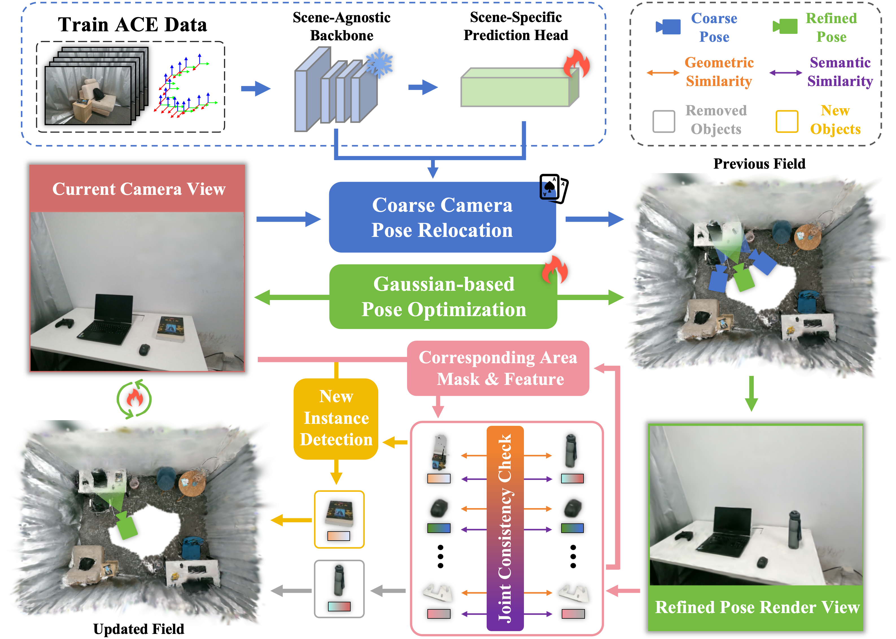
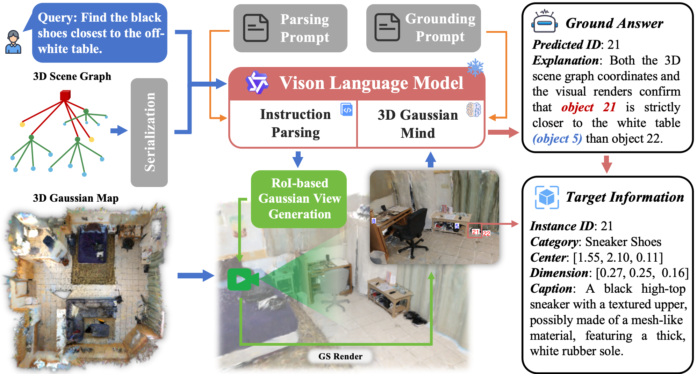

Dynamic Scene Update

IEEE Robotics and Automation Letters 2026 Submission
Integrating open-vocabulary semantic information into dynamic 3D scene representations is essential for long-term embodied spatial perception. However, existing methods often suffer from fragile instance association due to incomplete cross-view cues, while their limited ability to handle topological changes restricts long-term robotic task execution. In addition, current 3D scene understanding methods either rely on simple feature matching without explicit spatial reasoning or assume offline ground-truth 3D geometry. To address these challenges, we present DGSG-Mind, a dynamic instance-aware 3D Gaussian scene graph system with an embodied reasoning agent. Our system couples explicit 3D Gaussians with a probabilistic voxel grid to build a hybrid instance-aware representation, enabling cross-modal instance fusion and incremental semantic mapping. To handle dynamic changes, we perform Gaussian-based visual relocalization and apply localized masked refinement guided by geometric-semantic consistency. We then construct a hierarchical scene graph from the Gaussian map and develop the 3D Gaussian Mind, which integrates hierarchical structural relations, spatial-semantic information, and visually annotated RoI Gaussian renderings for multimodal reasoning. Extensive experiments show that DGSG-Mind achieves SOTA zero-shot 3D visual grounding among methods operating on self-reconstructed maps, while also delivering strong performance in open-vocabulary semantic segmentation and scene reconstruction. We further deploy DGSG-Mind on real-world robots to validate its target-oriented reasoning and dynamic update capabilities.


